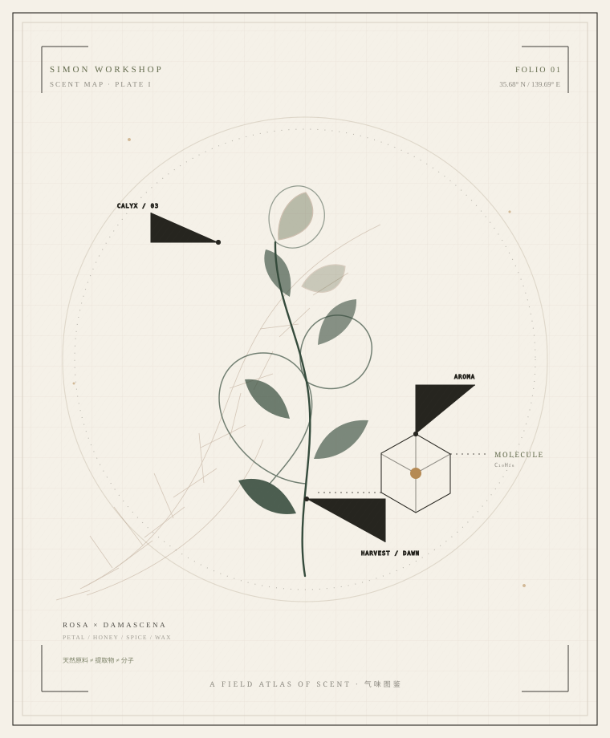

气味从何而来又如何被创造？
香谱是一本关于人类气味世界的综合性数字图鉴。它从植物与提取物出发，穿过芳香分子与化学结构，进入调香、香水、熏香和安全法规。

它不只告诉你某种东西闻起来像什么，而是解释它是什么、从哪里来、为什么有这种气味，以及人类如何获取、制造和应用它。
香谱把植物、提取物、芳香分子、商品原料和香水作品分开记录。天然玫瑰不是玫瑰精油，玫瑰精油不是香叶醇，香叶醇也不是一支完整的玫瑰香水。只有把这些层级拆开，气味才会变得可理解。
- 它是什么？属于哪一类实体？
- 它从哪里来？物种、产地、部位与工艺。
- 它为什么具有这种气味？化学与感知。
- 人类如何获取或制造它？
- 它如何被应用？
- 它与其他气味有什么联系？
- 它在历史、文化和艺术中扮演什么角色？
七个入口，一条从自然到感知的路径 MAP
你可以从一片花瓣开始，也可以从一个分子、一支香水、一段文字或一条法规开始。每个入口都通向同一套关联数据。
天然原料Natural Aromatics
花、木、树脂、柑橘、香料、根茎、动物历史材料。
芳香分子Molecules & Materials
结构、CAS、气味、天然存在与商品原料。
调香体系Perfumery
香调轮盘、经典和弦、浓度与配方原则。
香水档案Perfume Archive
品牌、调香师、年份、香调与公开香调表。
熏香文化Incense & Ritual
中国、日本、中东、欧洲、南亚与美洲的用香。
安全法规Safety & Regulation
IFRA、过敏原、光毒性、储存与地区规章。
调香工坊From Petals to Skin
酒精酊剂、油脂浸提、10mL 香水与专属气味设计。
气味逆向检索Reverse Scent Search
把“雨后的森林”翻译成原料、分子、香调与香水。
从自然到鼻子，中间发生了什么 FLOW
同一植物可以产出多种提取物；同一提取物包含数百个分子；同一分子可能出现在完全不同的气味语境里。
植物 / 生物
物种、部位、产地、采收与保护状态。
85 MATERIALS提取物
精油、原精、浸膏、纯露、酊剂与树脂净油。
60 EXTRACTS芳香分子
结构、阈值、气味、天然来源与合成路径。
162 MOLECULES和弦 / 香水
调香结构、香气和弦、作品与调香师。
12 ACCORDS文化 / 安全
仪式、历史、法规与使用规范。
INCENSE / SAFETY把一段文字，翻译成气味线索 REVERSE
不声称能通过文字还原气味。系统用已录入的标签、同义词与关联数据做本地语义匹配，并解释每条推荐的理由。
“雨后的森林”是什么味道？
输入主观描述，得到相关的天然原料、芳香分子、香调、和弦与香水。这是一个创作与知识入口，不是精确的气味生成器。
香气不是一条直线，而是一张可以点击的地图 WHEEL
从一朵玫瑰，到一瓶香水 OBJECTS
每一条记录都保留来源、审核摘要和不确定性；不为了“完整”而补造事实。
十五种描述气味的方式 FAMILIES
天然原料不是单一分子，分子也不能完整代表天然原料的气味。这是香谱最重要的一条编辑原则。
我们区分植物、提取物、化学物质、商品原料和香水作品；区分官方公开香调与商业配方；区分危害、风险、剂量与法规。对无法核实的内容，标记“待核实”而不是填满。
网站内容不构成医疗、毒理、调香配方或法规合规建议。实际产品与配方须由合格专业人员按最新原始文件评估。